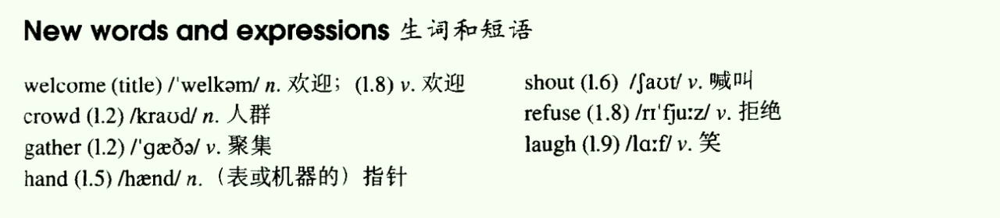
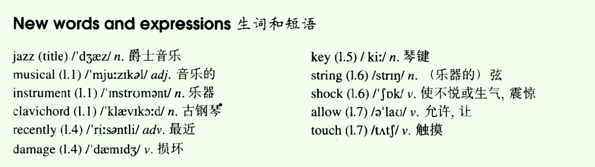

Lesson 09
一、单词讲解
1、welcome
- n.欢迎 a cold/warm welcome
- v.欢迎 welcome you/the New Year、Welcome to Beijing.
- adj.受欢迎的 You are welcome.（你是受欢迎的；不用谢）
2、crowd：n.人群
- a large crowd of people
- crowded：adj.拥挤的
3、hand：n.（表或机器的）指针
- v.传递 hand sth. to sb.
4、refuse
- refuse sb./sth.
- refuse to do sth.
All

二、课文&语法讲解
1、表示时间的介词短语
2、复习时态L7（过去完成时、一般过去时、过去将来时）
3、课文
On Wednesday evening, we went to the Town Hall.
- 和天有关系的，使用on；
- On Wednesday evening
- in the evening
It was the lest day ... and a large crowd of people had gathered ... 过去完成时
It would strike twelve in twenty minutes' time.
- in + 时间，若和将来时连用，通常表示多长时间之后；
- twenty minutes' time：二十分钟的时间
- 名词所有格（名词与名词间建立所拥有的关系，...的，并不都是表示人的）
- a teacher's books
- teachers' books 以s结尾的直接加'，不再加s了
- ten years' time：十年的时间
The ... minute hand did not move.
- hour hand
- second hand：秒针、二手的
We waited and waited, ... nothing happened.
- sth. happen to sb.
I looked at my watch.
- look vi.不及物动词
- 不能加宾语，若非要加，需要在中间插入一个中介、媒介（介词prep.）；及物动词想加宾语
- 点用at；
- 中文的动词没有分类，所以就没有介词了；
It was true.
- True：adj.真实的；
- truth：n.事实、真相；
- false：adj.不真实的、错误的
The ... clock refused to welcome the New Year.
- refuse to do sth.
_At the moment_, everybody began to laugh...
- begin、began、begun
- begin to do sth. = begin doing sth.
4、介词
- 用法：接名词、名词性的（代词（使用宾格）、动名词）；
- 介词和后面的名词，构成介宾结构，后面的名词做宾语
- 代词用宾格
- 介词后面加宾语从句
- in、on、at、by、with、without、from、of等
表时间的介词(prep.)
- before/after
- from ... to ...
- since/until
- during
- at 8 o'clock/night/midnight/noon 接时间点、类似时间点
- on Monday/April 4th 接天
- in 1992/January/summer in表示在...里面，通常接比较大的范围
in the morning/afternoon/evening 上下晚，也是范围，也使用in
_On_ Sundays we don't have to go to work.
We will be there at 8:30.
Her birthday is on November 7th.
He was born in 1990.
三、知识扩展
- 1、表示时间的介词（prep.)
- _At_ one time, train were the only practical way to cross the vast areas of the west.
- Engaging in leisure-time activities with others helps us to meet our social needs while at the same time distracting（转移...注意力）us from our worries and troubles.
- Erosion（侵蚀）of white cliffs along the south coast of England has always been a problem but it has become more serious in recent years.
- But that doesn't have to be the outcome. Water shortages do not have to trouble the world--if we start valuing water more than we have in the past.
- _On New Year's Eve_, New York City....
- finish the job on time
- so long as：只要...
- on time：准时（踩着点）
- in time：准时（之前，提前）
Lesson 10
一、单词讲解
- 1、jazz：n.爵士音乐；
- 2、musical：adj.音乐的、悦耳的、精通音乐的；
- 3、instrument：n.乐器、仪器
- 4、clavichord：n.古钢琴；
- piano：现代钢琴；
- 5、recently：adv.最近；
- 中文中，最近都指现在时；
- 英语中，最近都指过去时；
- 6、damage：v.损坏（可以修复）
- destroy：猛烈地不可以修复的损坏
- ruin：缓慢地不可以修复的损坏
- spoil：精神上的损坏；宠坏
- 7、key：n.琴键、关键；钥匙
- key structure/point
- 8、string：n（乐器的）弦
- 9、shock：v.使不悦或生气、吃惊震惊（不高兴的）；n、吃惊震惊
- surprise：v.吃惊震惊（高兴的、不高兴的）；n、吃惊震惊
- 10、allow：v.允许、让；
11、touch：v.触摸；
All

二、课文&语法讲解
1、被动语态
- 概述
- 语态分两种：主动语态、被动语态；
- 被动语态特别符合英语式的逻辑思维；中、英文的侧重点不同：中文以人为主体，“我认为...”，“谁谁说...”；人不客观；英文以事为主体，“...被认为”；
- 狗吃了那个蛋糕。
- The dog ate the cake.
- ?吃了那个蛋糕
- 想写出主动的句子，需要先知道动作的发出者；主动的句子表达不了，只能写被动的句子；
- 蛋糕被吃了；
- 应用范围
- 狗吃了那个蛋糕
- 蛋糕被狗吃了；
- 首先这个动词后面必须有宾语，及物动词；
- 加了介词的不物动词也可以，单独的不物动词不行；
- 公式
- _be_ + done
- done：被动的_动作_；
- be：被动的_时间_；be要变成对应的各种时态、要体现主语的单复数；
- 教室每天都打扫。
- Classrooms are cleaned (clean) every day.
- A new building was built (build) last year.
- _be_ + done
- 和时态相结合
- 他_每天_被打。 He is beaten every day.
- 他_昨天_被打了。He was beaten yesterday.
- 他_明天将要_被打。He will be beaten tomorrow.
- 他_现在正在_被打。He is being beaten.
- 现在进行时的被动：am/is/are + being + done.
- The news is being broadcasted.
- 补充
- 被动语态也可以带上动作的发出者：...+ by + 动作的发出者；
- 例句
- English is spoken (speak) all over the world.
- The stadium was built (build) in 1998.
- Rome was not built in a day.
- People are being influenced by advertisements.
- 概述
2、课文
- We have an ... musical instrument.
- It is called a clavichord.
- It_ was made_ in Germany in 1681.
- Our clavichord is kept in the living room. 被保存在客厅里
- It has belonged to our family for a long time.
- sth. belong to sb.
- The instrument was bought by my grandfather many years ago.
- Recently it was damaged by a visitor.
- She tried to play jazz on it!
- She stuck the keys ... two of the strings were broken.
- strike、struck、struck
- break、broke、broken
- 英语中，有好多形容词其实来自动词的变化（被动语态），比如broken；
- My father was shocked. shocked也可以当形容词
- 那到底是当作动词，还是形容词？不重要，因为意思都是一样的；
- Now we are not allowed to touch it.
- It is being repaired by a friend of my father's.
- a friend of my father's：双重所有格（不重要）
- a friend of my father's (friends)
- my father's a friend：错误，名词前面的限定词只能有一个；
- 名词所有格：
- Lily's book
- the door of the room
- A's B、B of A的区别：词序
- a friend of my father's：双重所有格（不重要）
三、知识扩展
- 1、被动语态：be + done
- The teacher helps me.
- I am helped by the teacher.
- The teacher helps Jane.
- Jane is helped by the teacher.
- The teacher helps us.
- We are helped by the teacher.
- A college student bought my old car.
- My old car was bought by A college student.
- The secretary will fax the letters.
- the letters will be faxed by the secretary.
- That company employs Alicia.
- Alicia is employed by that company.
- Bod is mailing the package.
- The package is being mailed by Bob.